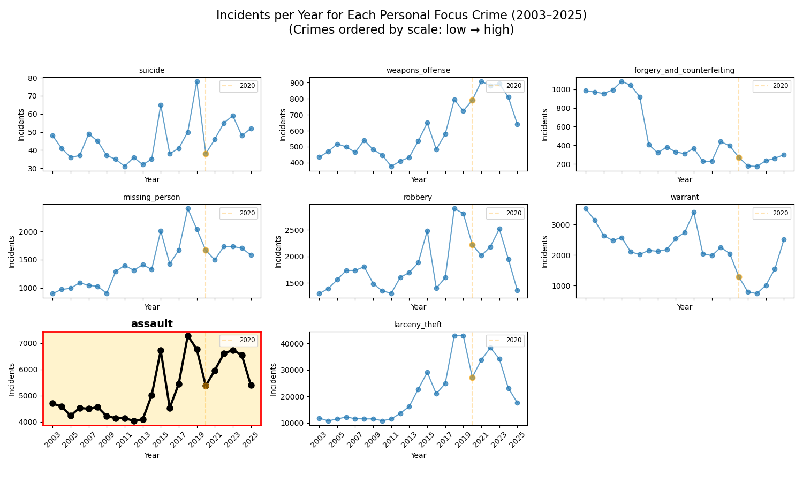

Crime is often described as something that fluctuates over time, rising, falling, shifting across the city. But what if some places never really change? What if, beneath these fluctuations, there are persistent patterns that remain stable year after year?
To explore this idea, we focus on assault in San Francisco, one of the most relevant and impactful crime categories. Unlike rarer crimes, assault directly affects people’s safety and how they experience the city.
As shown in the figure below, assault remains consistently present over time, making it a suitable case for studying long-term spatial patterns. The crimes in the figure are ordered from lowest to highest number of incidents, which makes it easier to compare them.
In this context, assault stands out as one of the most frequent crimes, second only to larceny/theft. This combination of high frequency and consistency makes it especially useful for understanding how crime is distributed across the city.
